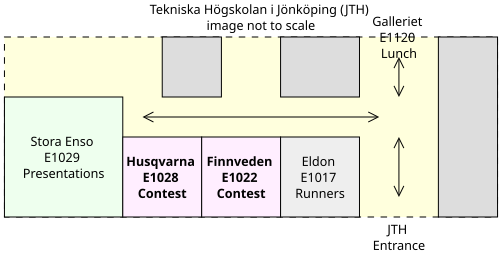

Nordic Collegiagte Programming Contest 2025
October 4th 2025
Welcome to NCPC 2025 @ JU.
Thank you for coming.
Competition starts at 11:00, in a few minutes.
Here is some useful information.
| Time | Event |
|---|---|
| 10:00 – 10:15 | Recommended arrival |
| 10:15 – 10:45 | Introduction Presentation |
| 11:00 – 16:00 | Main Contest (NCPC 2025) |
| Around 12:00 | Light lunch is served |
| 16:00 – 16:30 | Quick Award Ceremony |
Many thanks to our local sponsor the Department of Computing of JTH a.k.a. JAIL.
Also thanks to the central organization of NCPC for preparing and hosting the multi-site contest.
A special thanks to you for coming! We appreciate that you are here to compete!
In short: Teams of up to three persons try to solve as many programming problems as possible, without external help.
The NCPC format:
Problems usually involve standard IO in the command line:
Equipment:
What you may and may not use:
For instance:
If you are using VS Code, please remember to disable Copilot or any extensions with Generative AI.
You will get a printed copy of the problem statement in a sealed envelope.
Please only open it once the competition timer starts.
Please review the rules here:
You’ll compete in E1028 and E1022, right outside to the
right.

Light lunch is served at around 12:00 on Galleriet.
(We’ll announce in the contest rooms once it’s served.)
I will take pictures during the competition, to document and announce within JU that this has happened.
If you would not like to appear in the pictures, please let me know.
| Time | Event |
|---|---|
| 10:00 – 10:15 | Recommended arrival |
| 10:15 – 10:45 | Introduction Presentation |
| 11:00 – 16:00 | Main Contest (NCPC 2025) |
| Around 12:00 | Light lunch is served |
| 16:00 – 16:20 | Quick Award Ceremony |
After the competition ends,
please come back to Stora Enso for
the quick award ceremony & group picture.
Please bring your balloons.
It’ll be very quick I promise…
Now:
Good luck!
.
Many thanks to our local sponsor the Department of Computing of JTH a.k.a. JAIL.
Also thanks to the central organization of NCPC for preparing and hosting the multi-site contest.
A special thanks to you for coming! We appreciate that you are here to compete!
Let us take a look together at the results.
Congratulations to our winning team(s)!
Congratulations to all of you who participated!
I hope you had fun!
Let’s take a group picture.
Don’t forget your balloons.
Again, thanks for coming!
I hope to see you next year.
.
{kind=link}